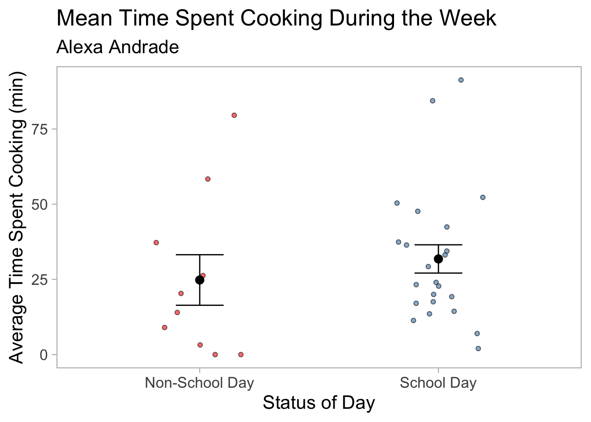

Show code
library(tidyverse)
library(here)
library(gt)
library(flextable)
library(janitor)
library(readxl)
library(tidyverse)
library(here)
library(readxl)
library(dplyr)
library(flextable) May 31, 2025
Environmentalists work in many sectors, and are employed in a variety of roles that require different skill sets. Therefore, as an environmental science student, it is critical to equip myself for the future and the job market by developing new skills. ENVS 193DS did exactly that.
The class built my foundation in coding in R, equiping me with the confidence to go one and fo my own personal project. This specific personal project was fostered by my curiosity: Do I on average spend more time cooking on school days or non school days?
Throughout spring quarter I created a dataset that recorded by time spent cooking every day, and towards the end of the quarter I inputted it into R to determine the answer to my question.
Before you read on, let it be known that my assumption when I developed this question, was that I would spend more time cooking during the weekends that on school days. On school days I have classes and I tend to work on assighnments more, so I assumed that I would spend less time cooking. In the rest of this blog I lay out the code I ran to determine weither my assumption was correct or not.
Cooking_clean <- read_xlsx(here("Data", "Cooking_timeF.xlsx")) |> #Reading in my data
clean_names() #Standarizing
#Creating a summary
Cooking_summary <- Cooking_clean |> #Creating new object
group_by(school_day) |> #Seperating statistics by school day: Y or N
summarise(
mean = mean(minutes_spent_cooking_min), # Calculate mean
n = n(), # Count number of observations
sd = sd(minutes_spent_cooking_min), # Calculate standard deviation
se = sd / sqrt(n), # Calculate standard error
ci_lower = mean - qt(0.975, df = n - 1) * se, # 95% CI lower bound
ci_upper = mean + qt(0.975, df = n - 1) * se # 95% CI upper bound
) |>
mutate(
across(c(mean, sd, se, ci_lower, ci_upper), ~round(.x, 1)) # Round values
) |>
select(school_day, mean, sd, se, ci_lower, ci_upper) # Select final columns
Cooking_summary <- Cooking_summary |> #Renaming the categories in school_day column to be full labels
mutate(school_day = recode(school_day,
"N" = "Non-School Day",
"Y" = "School Day"))
Cooking_summary |>
flextable() |> #creating table
set_header_labels(
school_day = "Status of Day", #x-axis label
mean = "Mean",
sd = "Standard Deviation",
se = "Standard Error",
ci_lower = "95% CI Lower",
ci_upper = "95% CI Upper" ) |>
set_caption("Summary Statistics of Cooking Time by School Day") |> #Name of the table
autofit()Status of Day | Mean | Standard Deviation | Standard Error | 95% CI Lower | 95% CI Upper |
|---|---|---|---|---|---|
Non-School Day | 24.8 | 26.6 | 8.4 | 5.8 | 43.8 |
School Day | 31.8 | 22.4 | 4.7 | 22.1 | 41.5 |
Cooking_clean <- Cooking_clean %>%
mutate(school_day = recode(school_day, #relabelling my school day categories to be visually appealing
"Y" = "School Day",
"N" = "Non-School Day"))
ggplot(data = Cooking_clean, aes(x = school_day, y = minutes_spent_cooking_min, fill = school_day)) + #setting uo with data is lotted where
geom_jitter(width = 0.2, height = 0, alpha = 0.6, shape = 21, color = "black") + #creating a jitter plot that ensures points don't overlap
geom_errorbar(data = Cooking_summary, #creating error bars from the summary statistics ran earlier
aes(x = school_day, ymin = mean - se, ymax = mean + se),
width = 0.2,
inherit.aes = FALSE,
color = "black") + #coloring the error bars black
geom_point(data = Cooking_summary, #plotting the mean point
aes(x = school_day, y = mean),
inherit.aes = FALSE,
color = "black",
size = 3) +#Making the mean point a certain size and shape
labs(x = "Status of Day", #labelling my axis
y = "Average Time Spent Cooking (min)",
title = "Mean Time Spent Cooking During the Week",
subtitle = "Alexa Andrade") + #citing myself as the creator
scale_fill_manual(values = c("School Day" = "steelblue", "Non-School Day" = "red")) + #assighning my different categories custom colors
theme_light(base_size = 16) + #changing the theme of the graph
theme(panel.grid = element_blank(),
panel.background = element_rect(fill = "white", color = NA),
plot.background = element_rect(fill = "white", color = NA),
legend.position = "none") #No legends or gridlines 
Figure 1. Average time spent cooking(min) tends to be higher on School Days. Data collected personally by Alexa Andrade. The points represent observations of daily time spent cooking(min) and are differentiated by whether the observations were taken on school(n=24) or non-school(n=10) days(total n=34). Colors represent the status of the day(red = non-school day, blue = school day). The graph represents the comparison between mean time spent cooking on different types of days, represented by the large black point, ± standard error(SE) bar whiskers between school days and non-school days.
At the end, I am very greatfull for developing new skills and am amazed by the results of this personal project. I only started cooking once I went to college, and this data has shown me that I tend to prefer fast, simple meals. In the future, hopefully when I have more time, I hope that the time I spend cooking will only increase as I advance further into my cooking journey. I didn’t realize how large of an impact wanting to be lazy on the weekends, led to me eating leftovers and eating out more, rather than wantng to cook more at home.
@online{andrade2025,
author = {Andrade, Alexa},
title = {Average Time {Spent} {Cooking} Throughout the Week},
date = {2025-05-31},
url = {https://samanthacsik.github.io/posts/2022-10-24-my-blog-post/},
langid = {en}
}